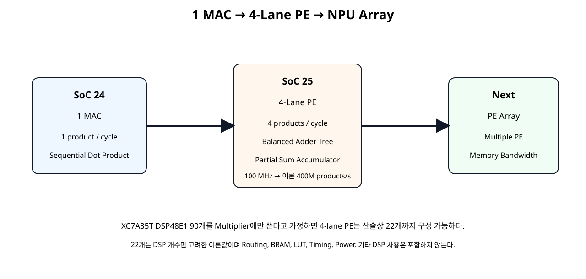
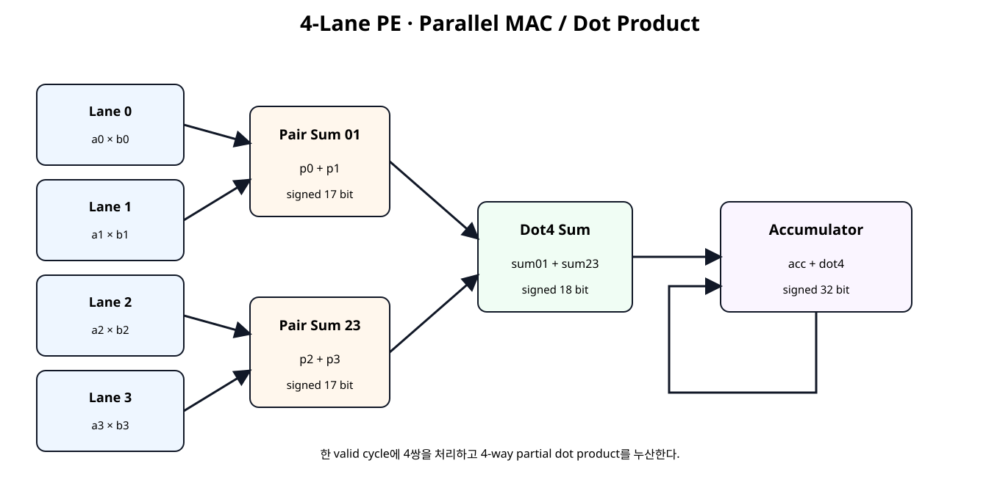
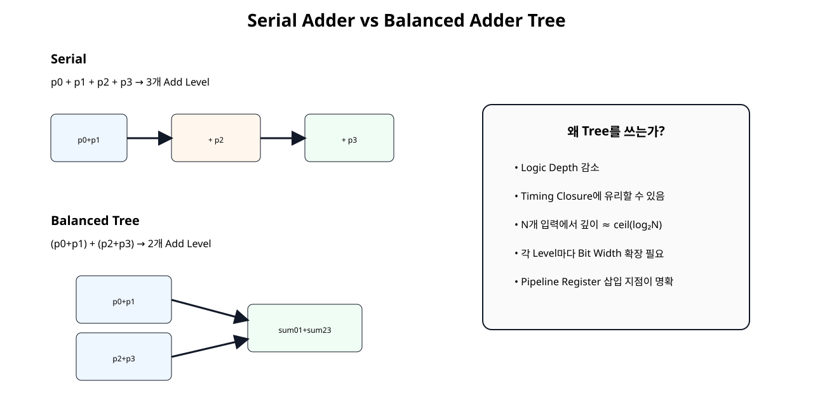
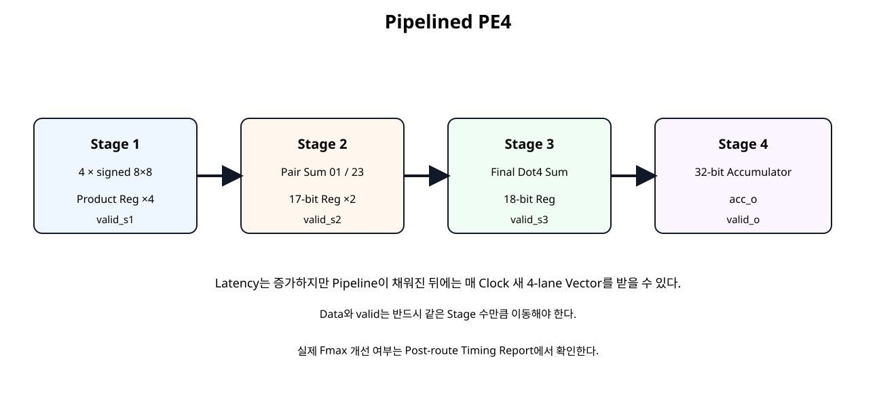

전체 학습 위치
이번 장의 목표

원본 보기 ↗
MAC과 PE의 차이
| 구조 | 역할 |
|---|---|
| MAC | 한 쌍의 Multiply + Accumulate |
| PE | 여러 Multiply Lane + Reduction + Partial Sum/Accumulator + Valid/Control |
PE(Processing Element, 처리 요소)는 NPU Array를 구성하는 계산 블록 단위이며, 구현마다 내부 Lane 수와 Reduction 방식은 달라질 수 있다.
4-Lane PE 전체 구조

원본 보기 ↗
4-way Vector Dot Product
한 Clock 입력에서 4개의 Weight×Activation Pair를 동시에 처리한다. 이 Dot4 결과를 여러 Cycle 누적하면 더 긴 Vector의 Dot Product가 된다.
Packed Vector Lane Mapping
a_vec_i[7:0] → lane0
a_vec_i[15:8] → lane1
a_vec_i[23:16] → lane2
a_vec_i[31:24] → lane3
b_vec_i도 동일Top Interface는 32-bit Packed Bus로 단순화하고 내부에서 각 signed 8-bit Lane으로 분리한다.
Fixed-Point 규칙 유지
SoC 24와 동일하게 각 입력은 signed 8 bit, Fractional Bits는 7이다. 각 Product는 Fractional Bits 14이며, 여러 Product를 더해도 Binary Point는 이동하지 않는다.
4개 Product의 폭
각 Lane의 signed 8×8 전체 Product는 signed 16 bit다.
(* use_dsp = "yes" *)
module mul_s8_dsp (
input wire signed [7:0] a_i,
input wire signed [7:0] b_i,
output wire signed [15:0] p_o
);
// Dedicated 8x8 signed multiplier building block.
// USE_DSP requests DSP implementation, but the final mapping
// must still be verified with Vivado synthesis reports.
assign p_o =
$signed(a_i) * $signed(b_i);
endmodule
Pair Sum 17 bit
두 Product를 더할 때 Carry/Sign 범위를 보존하려면 1 bit를 추가한다.
Dot4 Sum 18 bit
4개 Lane 모두 -128 × -128이면 각 Product는 16384이고 합은 65536이다.
Balanced Adder Tree

원본 보기 ↗
Serial Sum과 Logic Depth
| 형태 | Add Depth |
|---|---|
(((p0+p1)+p2)+p3) | 3 Level |
(p0+p1)+(p2+p3) | 2 Level |
Lane 수가 N으로 증가하면 균형 Tree의 Reduction Depth는 대략 ceil(log₂N) 단계로 구성할 수 있다.
Basic PE4
Basic 구조는 4개의 Multiply와 2-Level Adder Tree를 조합 경로로 계산한 후 같은 Clock Edge에서 32-bit Accumulator에 더한다.
Basic PE4 RTL
module pe4_dot_accum_basic (
input wire clk,
input wire resetn,
input wire clear_i,
input wire valid_i,
input wire [31:0] a_vec_i,
input wire [31:0] b_vec_i,
output reg signed [31:0] acc_o,
output reg valid_o
);
// 4-lane PE:
// 4 parallel signed 8x8 multipliers
// balanced adder tree
// 32-bit accumulator
//
// Packed lane mapping:
// lane0 = [7:0]
// lane1 = [15:8]
// lane2 = [23:16]
// lane3 = [31:24]
wire signed [7:0] a0;
wire signed [7:0] a1;
wire signed [7:0] a2;
wire signed [7:0] a3;
wire signed [7:0] b0;
wire signed [7:0] b1;
wire signed [7:0] b2;
wire signed [7:0] b3;
assign a0 = $signed(a_vec_i[7:0]);
assign a1 = $signed(a_vec_i[15:8]);
assign a2 = $signed(a_vec_i[23:16]);
assign a3 = $signed(a_vec_i[31:24]);
assign b0 = $signed(b_vec_i[7:0]);
assign b1 = $signed(b_vec_i[15:8]);
assign b2 = $signed(b_vec_i[23:16]);
assign b3 = $signed(b_vec_i[31:24]);
wire signed [15:0] p0;
wire signed [15:0] p1;
wire signed [15:0] p2;
wire signed [15:0] p3;
mul_s8_dsp u_mul0 (.a_i(a0), .b_i(b0), .p_o(p0));
mul_s8_dsp u_mul1 (.a_i(a1), .b_i(b1), .p_o(p1));
mul_s8_dsp u_mul2 (.a_i(a2), .b_i(b2), .p_o(p2));
mul_s8_dsp u_mul3 (.a_i(a3), .b_i(b3), .p_o(p3));
// Pair sums need one extra signed bit.
wire signed [16:0] sum01;
wire signed [16:0] sum23;
assign sum01 =
$signed({p0[15], p0}) +
$signed({p1[15], p1});
assign sum23 =
$signed({p2[15], p2}) +
$signed({p3[15], p3});
// Four-product sum needs 18 signed bits.
// Worst positive case:
// 4 * (-128 * -128) = 65536
// which does not fit in signed 17-bit.
wire signed [17:0] dot4_w;
assign dot4_w =
$signed({sum01[16], sum01}) +
$signed({sum23[16], sum23});
wire signed [31:0] dot4_ext_w;
assign dot4_ext_w =
{{14{dot4_w[17]}}, dot4_w};
always @(posedge clk) begin
if (!resetn) begin
acc_o <= 32'sd0;
valid_o <= 1'b0;
end else if (clear_i) begin
acc_o <= 32'sd0;
valid_o <= 1'b0;
end else begin
valid_o <= valid_i;
if (valid_i) begin
acc_o <= acc_o + dot4_ext_w;
end
end
end
endmodule
Pipelined PE4

원본 보기 ↗
AMD는 DSP Block을 사용하는 Datapath를 충분히 Pipeline하여 내부 Register Stage를 활용하도록 권장한다. 실제 Timing 개선 정도는 구현 결과로 확인한다.
Valid Pipeline
valid_i
↓
valid_s1_q
↓
valid_s2_q
↓
valid_s3_q
↓
valid_oProduct, Pair Sum, Dot4가 각각 한 Stage씩 이동하므로 Valid도 같은 순서로 이동해야 한다.
Pipelined PE4 RTL
module pe4_dot_accum_pipelined (
input wire clk,
input wire resetn,
input wire clear_i,
input wire valid_i,
input wire [31:0] a_vec_i,
input wire [31:0] b_vec_i,
output reg signed [31:0] acc_o,
output reg valid_o
);
// Four-stage datapath:
// Stage 1: 4 parallel products
// Stage 2: 2 pair sums
// Stage 3: final 4-way dot-product sum
// Stage 4: accumulator
//
// valid_i is pipelined through the same stages.
wire signed [7:0] a0;
wire signed [7:0] a1;
wire signed [7:0] a2;
wire signed [7:0] a3;
wire signed [7:0] b0;
wire signed [7:0] b1;
wire signed [7:0] b2;
wire signed [7:0] b3;
assign a0 = $signed(a_vec_i[7:0]);
assign a1 = $signed(a_vec_i[15:8]);
assign a2 = $signed(a_vec_i[23:16]);
assign a3 = $signed(a_vec_i[31:24]);
assign b0 = $signed(b_vec_i[7:0]);
assign b1 = $signed(b_vec_i[15:8]);
assign b2 = $signed(b_vec_i[23:16]);
assign b3 = $signed(b_vec_i[31:24]);
wire signed [15:0] p0_w;
wire signed [15:0] p1_w;
wire signed [15:0] p2_w;
wire signed [15:0] p3_w;
mul_s8_dsp u_mul0 (.a_i(a0), .b_i(b0), .p_o(p0_w));
mul_s8_dsp u_mul1 (.a_i(a1), .b_i(b1), .p_o(p1_w));
mul_s8_dsp u_mul2 (.a_i(a2), .b_i(b2), .p_o(p2_w));
mul_s8_dsp u_mul3 (.a_i(a3), .b_i(b3), .p_o(p3_w));
// Stage 1 registers.
reg signed [15:0] p0_q;
reg signed [15:0] p1_q;
reg signed [15:0] p2_q;
reg signed [15:0] p3_q;
reg valid_s1_q;
// Stage 2 combinational pair sums.
wire signed [16:0] sum01_w;
wire signed [16:0] sum23_w;
assign sum01_w =
$signed({p0_q[15], p0_q}) +
$signed({p1_q[15], p1_q});
assign sum23_w =
$signed({p2_q[15], p2_q}) +
$signed({p3_q[15], p3_q});
// Stage 2 registers.
reg signed [16:0] sum01_q;
reg signed [16:0] sum23_q;
reg valid_s2_q;
// Stage 3 final reduction.
wire signed [17:0] dot4_w;
assign dot4_w =
$signed({sum01_q[16], sum01_q}) +
$signed({sum23_q[16], sum23_q});
reg signed [17:0] dot4_q;
reg valid_s3_q;
wire signed [31:0] dot4_ext_w;
assign dot4_ext_w =
{{14{dot4_q[17]}}, dot4_q};
always @(posedge clk) begin
if (!resetn) begin
p0_q <= 16'sd0;
p1_q <= 16'sd0;
p2_q <= 16'sd0;
p3_q <= 16'sd0;
valid_s1_q <= 1'b0;
sum01_q <= 17'sd0;
sum23_q <= 17'sd0;
valid_s2_q <= 1'b0;
dot4_q <= 18'sd0;
valid_s3_q <= 1'b0;
acc_o <= 32'sd0;
valid_o <= 1'b0;
end else if (clear_i) begin
p0_q <= 16'sd0;
p1_q <= 16'sd0;
p2_q <= 16'sd0;
p3_q <= 16'sd0;
valid_s1_q <= 1'b0;
sum01_q <= 17'sd0;
sum23_q <= 17'sd0;
valid_s2_q <= 1'b0;
dot4_q <= 18'sd0;
valid_s3_q <= 1'b0;
acc_o <= 32'sd0;
valid_o <= 1'b0;
end else begin
// Stage 1
valid_s1_q <= valid_i;
if (valid_i) begin
p0_q <= p0_w;
p1_q <= p1_w;
p2_q <= p2_w;
p3_q <= p3_w;
end
// Stage 2
valid_s2_q <= valid_s1_q;
if (valid_s1_q) begin
sum01_q <= sum01_w;
sum23_q <= sum23_w;
end
// Stage 3
valid_s3_q <= valid_s2_q;
if (valid_s2_q) begin
dot4_q <= dot4_w;
end
// Stage 4
valid_o <= valid_s3_q;
if (valid_s3_q) begin
acc_o <= acc_o + dot4_ext_w;
end
end
end
endmodule
Multiplier와 USE_DSP
각 Lane의 mul_s8_dsp에 (* use_dsp = "yes" *)를 적용했다. Vivado 2026.1에서 USE_DSP=yes는 해당 Arithmetic Structure를 DSP Block에 배치하도록 지시한다.
DSP Register 흡수
Vivado Synthesis는 Multiply-Add/MAC 구조 주변의 Register를 DSP Block Pipeline에 흡수할 기회를 탐색한다. 따라서 Pipelined RTL의 Product Register가 실제 DSP 내부 Register로 Mapping되는지는 Netlist와 Utilization Report에서 확인한다.
DSP Resource Scaling
XC7A35T에는 DSP48E1이 90개 있다. 각 Multiplier가 DSP 1개를 사용한다고 가정하면 4-Lane PE는 DSP 4개를 요구한다.
Python Reference
Bit Width와 Fixed-Point 해석, 4-Lane Dot Product를 Python으로 실제 검증했다.
case,dot_raw,dot_real,acc_raw,acc_real
four lanes of 0.5 * 0.5,16384,1.00000000,16384,1.00000000
mixed sign cancellation,0,0.00000000,16384,1.00000000
worst positive lane products,65536,4.00000000,81920,5.00000000
large negative dot product,-65024,-3.96875000,16896,1.03125000
4-lane max positive dot raw = 65536
4-lane min negative dot raw = -65024
dot4 exact signed width = 18 bits
DSP-only theoretical PE4 groups on XC7A35T = 22 groups (88 DSP used, 2 remaining)
At 100 MHz: 4-lane product throughput = 400,000,000 products/s
If multiply and add are counted as separate operations: 0.800 GOPS
GOPS counting conventions vary; this is a theoretical arithmetic-rate illustration, not measured NPU performance.
SOC25 PYTHON PE4 REFERENCE: PASS
Spreadsheet runtime warmup failed during python startup
Traceback (most recent call last):
File "/tmp/tmp.L2TH2Y5coc/artifact_tool_v2-2.8.22/artifact_tool/patches/warm_spreadsheet_runtime_on_startup.py", line 26, in warm_spreadsheet_runtime_on_startup
File "/tmp/tmp.L2TH2Y5coc/artifact_tool_v2-2.8.22/artifact_tool/spreadsheet_warmup.py", line 785, in warm_spreadsheet_runtime
File "/tmp/tmp.L2TH2Y5coc/artifact_tool_v2-2.8.22/artifact_tool/spreadsheet_warmup.py", line 720, in _warm_feature_flows
File "/tmp/tmp.L2TH2Y5coc/artifact_tool_v2-2.8.22/artifact_tool/spreadsheet_warmup.py", line 704, in _warm_collaboration_flows
File "/tmp/tmp.L2TH2Y5coc/artifact_tool_v2-2.8.22/artifact_tool/generated/interface/models.py", line 32317, in hydrate_crdt_from_proto
File "/tmp/tmp.L2TH2Y5coc/artifact_tool_v2-2.8.22/artifact_tool/rpc/remote.py", line 749, in __call__
File "/tmp/tmp.L2TH2Y5coc/artifact_tool_v2-2.8.22/artifact_tool/rpc/client.py", line 150, in call
artifact_tool.rpc.client.RemoteError: hydrateCrdtFromProto requires an empty collaborative document.
Self-Checking Testbench
`timescale 1ns / 1ps
module tb_pe4_dot_accum_compare;
logic clk = 1'b0;
logic resetn = 1'b0;
logic clear_i = 1'b0;
logic valid_i = 1'b0;
logic [31:0] a_vec_i = 32'h0;
logic [31:0] b_vec_i = 32'h0;
wire signed [31:0] basic_acc_o;
wire basic_valid_o;
wire signed [31:0] pipe_acc_o;
wire pipe_valid_o;
logic signed [31:0] expected_basic_q[$];
logic signed [31:0] expected_pipe_q[$];
logic signed [31:0] reference_acc;
int error_count = 0;
int check_count = 0;
always #5 clk = ~clk;
pe4_dot_accum_basic u_basic (
.clk(clk),
.resetn(resetn),
.clear_i(clear_i),
.valid_i(valid_i),
.a_vec_i(a_vec_i),
.b_vec_i(b_vec_i),
.acc_o(basic_acc_o),
.valid_o(basic_valid_o)
);
pe4_dot_accum_pipelined u_pipe (
.clk(clk),
.resetn(resetn),
.clear_i(clear_i),
.valid_i(valid_i),
.a_vec_i(a_vec_i),
.b_vec_i(b_vec_i),
.acc_o(pipe_acc_o),
.valid_o(pipe_valid_o)
);
function automatic logic [31:0] pack4(
input integer x0,
input integer x1,
input integer x2,
input integer x3
);
begin
pack4 = {
x3[7:0],
x2[7:0],
x1[7:0],
x0[7:0]
};
end
endfunction
function automatic logic signed [17:0] dot4_reference(
input logic [31:0] avec,
input logic [31:0] bvec
);
logic signed [7:0] a0;
logic signed [7:0] a1;
logic signed [7:0] a2;
logic signed [7:0] a3;
logic signed [7:0] b0;
logic signed [7:0] b1;
logic signed [7:0] b2;
logic signed [7:0] b3;
logic signed [15:0] p0;
logic signed [15:0] p1;
logic signed [15:0] p2;
logic signed [15:0] p3;
logic signed [16:0] s01;
logic signed [16:0] s23;
begin
a0 = $signed(avec[7:0]);
a1 = $signed(avec[15:8]);
a2 = $signed(avec[23:16]);
a3 = $signed(avec[31:24]);
b0 = $signed(bvec[7:0]);
b1 = $signed(bvec[15:8]);
b2 = $signed(bvec[23:16]);
b3 = $signed(bvec[31:24]);
p0 = a0 * b0;
p1 = a1 * b1;
p2 = a2 * b2;
p3 = a3 * b3;
s01 =
$signed({p0[15], p0}) +
$signed({p1[15], p1});
s23 =
$signed({p2[15], p2}) +
$signed({p3[15], p3});
dot4_reference =
$signed({s01[16], s01}) +
$signed({s23[16], s23});
end
endfunction
function automatic logic signed [31:0] accum_reference(
input logic signed [31:0] acc,
input logic [31:0] avec,
input logic [31:0] bvec
);
logic signed [17:0] dot4;
logic signed [31:0] dot4_ext;
begin
dot4 = dot4_reference(avec, bvec);
dot4_ext = {
{14{dot4[17]}},
dot4
};
accum_reference = acc + dot4_ext;
end
endfunction
task automatic drive_vector(
input integer a0,
input integer a1,
input integer a2,
input integer a3,
input integer b0,
input integer b1,
input integer b2,
input integer b3
);
logic [31:0] avec;
logic [31:0] bvec;
logic signed [31:0] next_acc;
begin
@(negedge clk);
avec = pack4(a0, a1, a2, a3);
bvec = pack4(b0, b1, b2, b3);
a_vec_i = avec;
b_vec_i = bvec;
valid_i = 1'b1;
clear_i = 1'b0;
next_acc = accum_reference(
reference_acc,
avec,
bvec
);
reference_acc = next_acc;
expected_basic_q.push_back(next_acc);
expected_pipe_q.push_back(next_acc);
end
endtask
task automatic drive_idle;
begin
@(negedge clk);
valid_i = 1'b0;
a_vec_i = 32'h0;
b_vec_i = 32'h0;
end
endtask
task automatic wait_queues_empty;
int k;
begin
drive_idle();
for (k = 0; k < 32; k++) begin
@(posedge clk);
if (
(expected_basic_q.size() == 0) &&
(expected_pipe_q.size() == 0)
) begin
return;
end
end
error_count++;
$error(
"TIMEOUT: basic_q=%0d pipe_q=%0d",
expected_basic_q.size(),
expected_pipe_q.size()
);
end
endtask
task automatic clear_pe;
begin
wait_queues_empty();
@(negedge clk);
clear_i = 1'b1;
valid_i = 1'b0;
@(negedge clk);
clear_i = 1'b0;
reference_acc = 32'sd0;
end
endtask
always @(posedge clk) begin
#1;
if (resetn && basic_valid_o) begin
check_count++;
if (expected_basic_q.size() == 0) begin
error_count++;
$error("BASIC PE4: unexpected valid");
end else begin
if (basic_acc_o !== expected_basic_q[0]) begin
error_count++;
$error(
"BASIC PE4 mismatch actual=%0d expected=%0d",
basic_acc_o,
expected_basic_q[0]
);
end else begin
$display(
"PASS BASIC PE4: acc=%0d",
basic_acc_o
);
end
expected_basic_q.pop_front();
end
end
if (resetn && pipe_valid_o) begin
check_count++;
if (expected_pipe_q.size() == 0) begin
error_count++;
$error("PIPE PE4: unexpected valid");
end else begin
if (pipe_acc_o !== expected_pipe_q[0]) begin
error_count++;
$error(
"PIPE PE4 mismatch actual=%0d expected=%0d",
pipe_acc_o,
expected_pipe_q[0]
);
end else begin
$display(
"PASS PIPE PE4: acc=%0d",
pipe_acc_o
);
end
expected_pipe_q.pop_front();
end
end
end
initial begin
reference_acc = 32'sd0;
repeat (5) @(posedge clk);
resetn = 1'b1;
// 4 lanes of +0.5 * +0.5.
// Each lane = 0.25, dot4 = 1.0.
drive_vector(
64, 64, 64, 64,
64, 64, 64, 64
);
// Mixed signs, dot4 = 0.0.
drive_vector(
64, -64, 32, -32,
64, 64, 64, 64
);
// Worst positive lane product: -128 * -128.
// Four lanes produce raw dot4 = 65536.
drive_vector(
-128, -128, -128, -128,
-128, -128, -128, -128
);
// Large negative dot product.
drive_vector(
-128, -128, -128, -128,
127, 127, 127, 127
);
wait_queues_empty();
clear_pe();
// Random signed 8-bit vectors.
repeat (32) begin
drive_vector(
$urandom_range(0, 255),
$urandom_range(0, 255),
$urandom_range(0, 255),
$urandom_range(0, 255),
$urandom_range(0, 255),
$urandom_range(0, 255),
$urandom_range(0, 255),
$urandom_range(0, 255)
);
end
wait_queues_empty();
$display("");
$display("SOC25 CHECK COUNT : %0d", check_count);
$display("SOC25 ERROR COUNT : %0d", error_count);
if (error_count == 0) begin
$display("SOC25 PE4 SELF-CHECKING TEST: PASS");
end else begin
$fatal(
1,
"SOC25 PE4 SELF-CHECKING TEST: FAIL (%0d errors)",
error_count
);
end
#20;
$finish;
end
endmodule
Basic과 Pipelined PE는 Latency가 다르므로 Expected Queue를 각각 유지하면서 동일 Reference Accumulator와 비교한다.
Directed Vector Test
| Vector | 목적 | Dot4 Raw |
|---|---|---|
| 4×(64,64) | 0.5×0.5를 4 Lane | 16384 → 1.0 |
| Mixed Sign | 양수/음수 Cancellation | 0 |
| 4×(-128,-128) | 최대 양수 합 | 65536 |
| 4×(-128,127) | 큰 음수 합 | -65024 |
Random Regression
Directed Test 후 4개 A Lane과 4개 B Lane을 각각 Random 8-bit 값으로 만든 Vector를 32회 입력하여 누적 결과를 Reference Model과 비교한다.
Throughput 계산
Pipeline이 충분히 채워진 뒤 매 Clock 한 Vector Group을 받을 수 있다는 가정의 Arithmetic Throughput이다.
GOPS 해석 주의
Multiply와 Add를 각각 한 Operation으로 세는 관습을 사용하면 4 Lane × 2 Operation × 100 MHz로 0.8 GOPS가 된다.
Vector Length가 4보다 큰 경우
PE4는 한 Cycle에 4 Element를 처리한다. 따라서 Vector Length가 16이면 4개의 Group으로 나누어 같은 Accumulator에 순서대로 누산한다.
Tail Handling
Vector Length가 4의 배수가 아니면 마지막 Cycle의 사용하지 않는 Lane을 0으로 Mask하면 된다.
이번 장은 Datapath에 집중하고 Tail Mask와 Length Counter는 SoC 26 Controller에서 구현한다.
Basys3 Board 구조
Board Top은 연결만 수행하고 PE Datapath 로직은 독립 Module에 유지한다.
Vivado 분석 Script
# SoC 25 · 4-Lane PE / Parallel MAC analysis
#
# Usage:
# vivado -mode batch -source scripts/run_pe4_analysis.tcl \
# -tclargs basic
#
# vivado -mode batch -source scripts/run_pe4_analysis.tcl \
# -tclargs pipelined
if {$argc < 1} {
puts "ERROR: usage: run_pe4_analysis.tcl <basic|pipelined>"
exit 1
}
set variant [lindex $argv 0]
if {$variant eq "basic"} {
set top_name pe4_basic_basys3_top
set pe_file pe4_dot_accum_basic.v
set board_file pe4_basic_basys3_top.v
} elseif {$variant eq "pipelined"} {
set top_name pe4_pipelined_basys3_top
set pe_file pe4_dot_accum_pipelined.v
set board_file pe4_pipelined_basys3_top.v
} else {
puts "ERROR: unknown variant '$variant'"
exit 1
}
set script_dir [file dirname [file normalize [info script]]]
set root_dir [file normalize [file join $script_dir ".."]]
set rtl_dir [file join $root_dir "rtl"]
set xdc_dir [file join $root_dir "constraints"]
set out_dir [file normalize [file join $root_dir "reports" $variant]]
file mkdir $out_dir
create_project -in_memory -part xc7a35tcpg236-1
read_verilog [file join $rtl_dir "reset_active_high_to_active_low.v"]
read_verilog [file join $rtl_dir "mul_s8_dsp.v"]
read_verilog [file join $rtl_dir "pe4_pattern_source.v"]
read_verilog [file join $rtl_dir "pe4_result_sink.v"]
read_verilog [file join $rtl_dir $pe_file]
read_verilog [file join $rtl_dir $board_file]
synth_design \
-top $top_name \
-part xc7a35tcpg236-1
read_xdc [file join $xdc_dir "basys3_pe4_lab.xdc"]
create_clock \
-name sys_clk \
-period 10.000 \
[get_ports clk]
report_utilization \
-hierarchical \
-file [file join $out_dir "01_utilization_post_synth.rpt"]
redirect -file [file join $out_dir "02_dsp48_cells_post_synth.rpt"] {
set dsp_cells [get_cells -hier -filter {REF_NAME =~ DSP48*}]
puts "DSP48 cell count: [llength $dsp_cells]"
foreach cell $dsp_cells {
puts $cell
}
}
report_timing_summary \
-delay_type min_max \
-report_unconstrained \
-max_paths 10 \
-file [file join $out_dir "03_timing_summary_post_synth.rpt"]
opt_design
place_design
phys_opt_design
route_design
report_utilization \
-hierarchical \
-file [file join $out_dir "04_utilization_post_route.rpt"]
report_timing_summary \
-delay_type min_max \
-report_unconstrained \
-max_paths 20 \
-file [file join $out_dir "05_timing_summary_post_route.rpt"]
report_timing \
-delay_type max \
-max_paths 20 \
-nworst 1 \
-sort_by group \
-input_pins \
-file [file join $out_dir "06_worst_setup_paths.rpt"]
report_design_analysis \
-max_paths 50 \
-setup \
-logic_level_distribution \
-file [file join $out_dir "07_design_analysis_post_route.rpt"]
# Same What-If activity assumption used in SoC 23/24.
set_switching_activity \
-default_static_probability 0.5 \
-default_toggle_rate 12.5
report_power \
-file [file join $out_dir "08_power_normalized_activity.rpt"] \
-rpx [file join $out_dir "08_power_normalized_activity.rpx"]
report_methodology \
-file [file join $out_dir "09_methodology_post_route.rpt"]
write_checkpoint -force \
[file join $out_dir "${variant}_pe4_post_route.dcp"]
puts ""
puts "SoC 25 PE4 analysis complete."
puts "Variant : $variant"
puts "Reports : $out_dir"
puts ""
puts "DSP count must be read from actual synthesis reports."
Synthesis에서 DSP48 Cell을 확인한 뒤 Post-route Timing, Design Analysis, Utilization, 동일 12.5% What-If Activity Power를 생성한다.
Timing 비교
Basic 구조는 Multiply + Adder Tree + Accumulate가 긴 Path가 될 수 있다. Pipelined 구조는 Product/Reduction Stage를 분리하므로 Timing Closure에 유리할 수 있지만 실제 Critical Path와 WNS는 Post-route Report로 확인한다.
Resource / DSP 비교
01_utilization_post_synth.rpt와 02_dsp48_cells_post_synth.rpt에서 실제 DSP48 개수를 확인한다. Pipelined PE는 Register가 더 많아질 수 있으며 Vivado가 일부 Register를 DSP 내부 Pipeline으로 흡수할 수도 있다.
Power 비교
SoC 23/24와 동일하게 Static Probability 0.5, Toggle Rate 12.5%를 What-If 비교 조건으로 적용한다. Lane 수 증가로 DSP Activity와 Data Routing이 늘기 때문에 1 MAC과 단순 비례한다고 가정하지 않는다.
PE Array 확장
원본 보기 ↗
Memory Bandwidth가 다음 병목
계산 Lane을 늘리면 매 Clock 공급해야 하는 Weight와 Activation 수도 늘어난다.
PE Array가 커질수록 DSP 개수보다 BRAM Port, Data Reuse, Buffer 구조, Memory Bandwidth가 먼저 병목이 될 수 있다.
오류 점검
| 증상 | 원인 | 확인 |
|---|---|---|
| 65536 Case가 음수/0으로 변함 | Dot Sum 폭 부족 | 18-bit dot4 |
| 음수 Lane만 오류 | Lane signed 변환 누락 | $signed() |
| Serial Sum Timing 불리 | Add Logic Depth 증가 | Balanced Tree |
| Pipeline 출력 순서 불일치 | Valid Stage 오류 | s1/s2/s3/valid_o |
| DSP 수가 예상과 다름 | Synthesis Mapping/흡수 | DSP48 Cell Report |
| 4 Lane인데 성능 향상 적음 | Memory/Stall 병목 | Input Bandwidth/Utilization |
| Power가 4배보다 훨씬 다름 | Clock/Route/Activity 변화 | Resource별 Power |
| N이 4의 배수가 아닐 때 오답 | Tail Lane 미처리 | Zero Mask |
SoC 25 완료 체크리스트
- [ ] MAC과 PE의 역할 차이를 설명할 수 있다.
- [ ] 4개의 signed 8×8 Multiply를 병렬 수행한다.
- [ ] Pair Sum은 signed 17 bit로 확장한다.
- [ ] 4-way Dot Product가 signed 18 bit인 이유를 설명할 수 있다.
- [ ] Serial Sum과 Balanced Adder Tree의 Logic Depth를 비교한다.
- [ ] 4-Lane Basic PE를 구현한다.
- [ ] 4-Stage Pipelined PE를 구현한다.
- [ ] Valid를 Data와 같은 Pipeline Stage로 이동한다.
- [ ] USE_DSP 요청과 실제 DSP Mapping 확인을 구분한다.
- [ ] Python Reference로 65536/-65024 극단값을 확인한다.
- [ ] Basic/Pipelined Latency를 독립 Expected Queue로 검증한다.
- [ ] 100 MHz에서 4 Lane Arithmetic Throughput의 의미를 계산한다.
- [ ] Vector Length > 4는 여러 Group 누산으로 확장한다.
- [ ] Tail Lane과 Memory Bandwidth가 다음 설계 문제임을 이해한다.
공식 매뉴얼 및 원본 근거
| 문서 | 확인 항목 |
|---|---|
| AMD UG901 · Multipliers · 2026.1 | Multiplier 추론과 결과 Width |
| AMD UG901 · USE_DSP · 2026.1 | DSP Block 사용 지시와 Attribute 우선순위 |
| AMD UG901 · Multiply-Add / MAC · 2026.1 | DSP Macro 및 Register Absorption |
| AMD UG949 · Optimal DSP Inference · 2026.1 | DSP Datapath Pipeline 권장 |
| AMD UG949 · Pipelining Considerations · 2026.1 | Logic Depth 분할과 Latency Trade-off |
| AMD UG906 · Report Utilization · 2026.1 | 실제 DSP/LUT/Register 사용 확인 |
| AMD UG907 · Netlist Element Activity · 2026.1 | 동일 What-If Switching Activity 비교 |
| AMD DS180 · 7 Series Overview | XC7A35T DSP48E1 90개 |